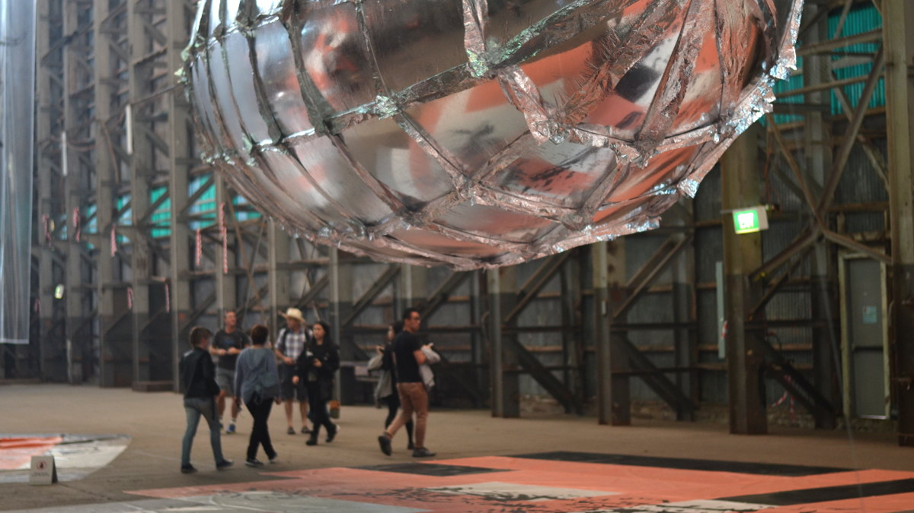

Stress and anxiety
I have been working full time for about a year now and it has been exhausting and stressful. My working life routine goes something like this: I wake up, shower, rush to work and then I jump into work for 8 hours without noticing time has flown by. I come back home, cook myself some dinner and then sleep. I do this 5 times a week. Once this is over, it's suddenly the weekend and I spend my hard earned weekend by recovering from the exhausting week at work. Then suddenly it's Monday again.
I'm not complaining about my work because I really couldn't ask for more. I work normal office hours and only occasionally work overtime. The office is located in a very convenient place and the view from my office is quite amazing. I have great coworkers and my boss is great. I really love working for my organisation and I truly believe in it.
One thing that I can say is that it's such a complex place to work. For the projects that I am involved with, everything is constantly evolving and it's hard to keep a track of it all. My tasks are currently creeping up on me and it's not something I can just undertake because many of the tasks I need to do require coordination with others and approvals from managers.
I am slowly beginning to understand why managerial positions are paid higher - because it's just so stressful. I'm not even in such a high position and yet work is stressing me out. I don't even have kids to look after and I am exhausted by the end of each week.
What is my first step into the professional world teaching me? A big portion of the job is a mental game and that we must play it. We cannot let stress and anxiety win. We need to be efficient and productive at work, yet we cannot let work consume our lives. We cannot think that the world is going to end if we don't finish what we plan to do. We need to be the one in charge of our workload and do it well. We need to be the one to prepare ourselves physically and mentally for the work day ahead. We need to be the one to check if we really like our jobs and if not take proactive measures to find one we like. We need to acknowledge that we are in a constant psychological battle or we will lose from stress and anxiety.
Instead of saying to myself "it's already Sunday night, I don't want to go to work tomorrow," I'm trying to say, "I'm excited for another challenging week at work". It's very unconvincing I know. But hopefully if I tell myself this ad nauseum - several times a day, everyday, I might actually end up believing it.